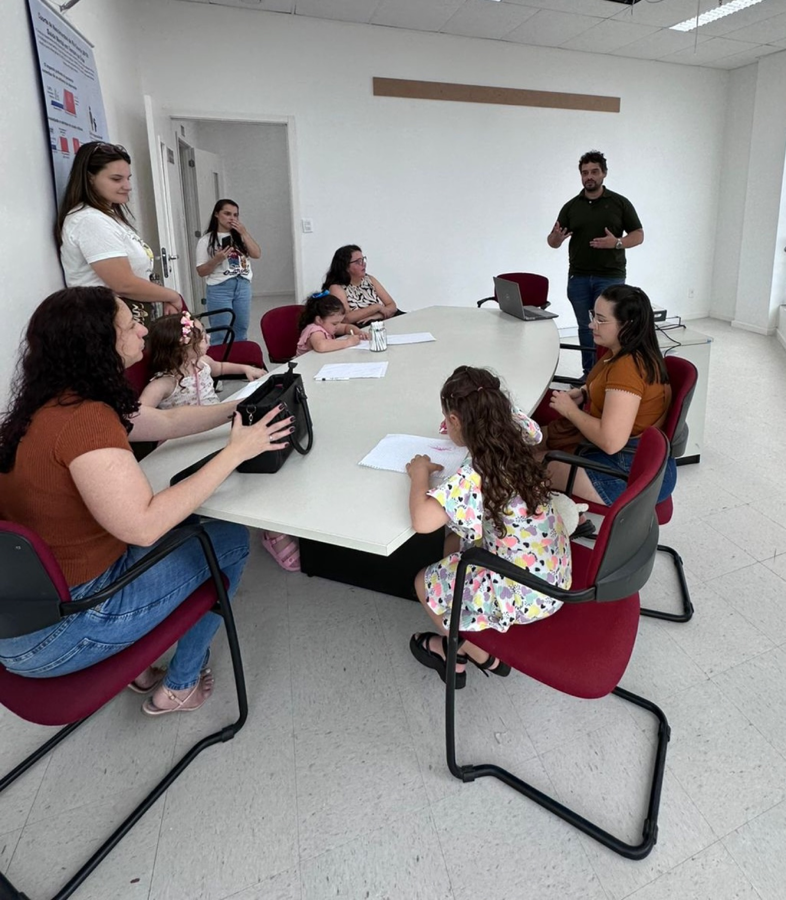
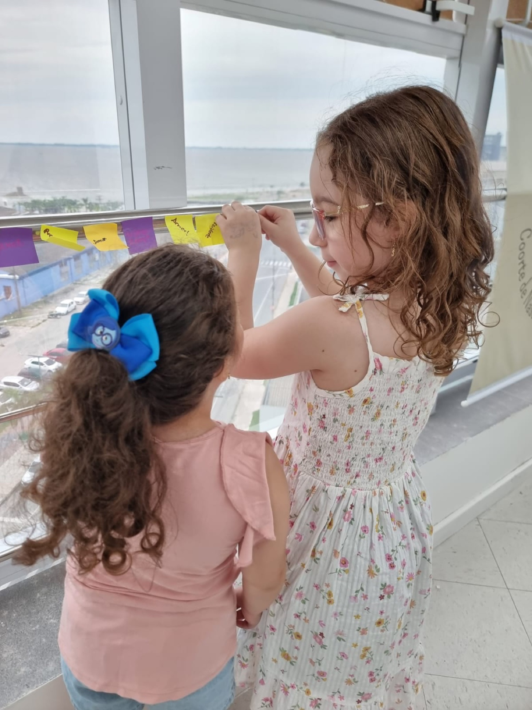
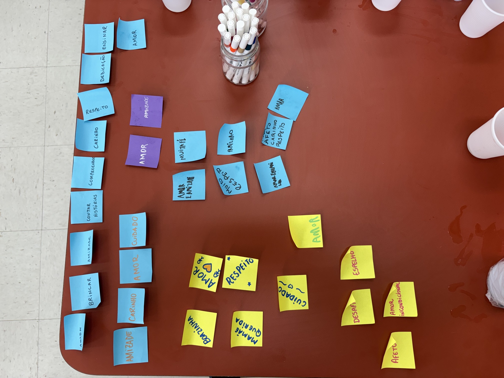

Pesquisa que volta
para a sociedade.
Para nós, impacto não é apenas publicar. É fazer o conhecimento circular, formar pessoas, construir relações e aproximar pesquisa e vida real.

Conhecimento que pode ser usado
Transformamos perguntas de pesquisa em evidências. Publicamos resultados em periódicos científicos, apresentamos em congressos e buscamos criar conhecimento que possa ser usado por pesquisadores, profissionais e formuladores de políticas.
Nosso artigo de referência — o Cohort Profile da Coorte Rio Grande 2019 — resume o que construímos nos últimos anos e abre caminhos para novas colaborações.
Formação que fica
Parte do nosso impacto fica nas pessoas que passam pelo GPIS. Formamos mestrandos, estudantes de iniciação científica e pesquisadores em epidemiologia, análise de dados e métodos longitudinais.
A aprendizagem está integrada ao trabalho de pesquisa em andamento: quem aprende no GPIS aprende fazendo, com dados reais e perguntas abertas.
Pesquisa construída em rede
Trabalhamos com parceiros no Brasil e no exterior. Redes de colaboração ampliam perguntas, métodos e perspectivas — e tornam a pesquisa mais robusta.
Nossas colaborações incluem a Manchester Metropolitan University (Reino Unido), a Universidad del Desarrollo (Chile) e a Universidad Científica del Sur (Peru).
Mais diálogo com a sociedade
Queremos que o conhecimento volte para as pessoas que tornaram a pesquisa possível. Buscamos comunicar resultados de forma acessível, dialogar com comunidades e escutar quem participa dos estudos.
Queremos fazer cada vez mais pesquisa com as pessoas, e não apenas sobre elas.


O que queremos construir a seguir
Estamos construindo uma plataforma de pesquisa longitudinal mais conectada com a sociedade. Nosso compromisso é tornar o GPIS um espaço onde rigor científico e responsabilidade social caminham juntos.
Isso inclui ampliar progressivamente a participação de comunidades nas decisões da pesquisa, devolver resultados de forma compreensível e aproximar ciência e vida cotidiana.
Quer construir isso conosco?
Estamos abertos a colaborações científicas, parcerias e conversas sobre como a pesquisa pode fazer mais sentido para mais pessoas.